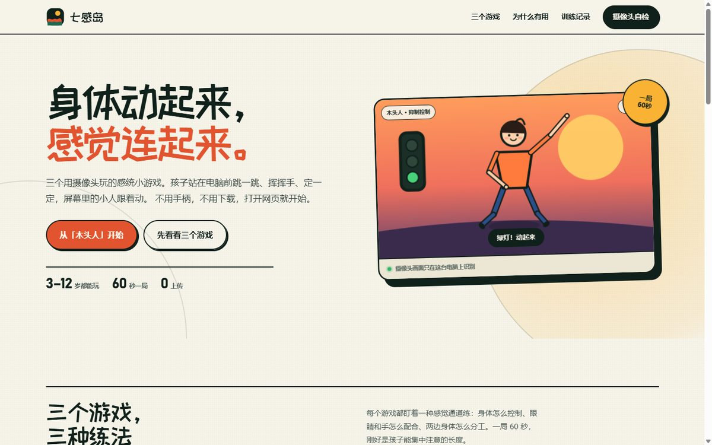

做出来的东西，点开就能试。
这里放王总自己动手做的 AI 小项目。不卖，只是做出来给大家看看、玩玩。能在线打开的直接点；要本机跑模型或服务的，先写成一页介绍。
能直接打开的
3 个，在线就能用。
还在本机跑的
需要模型、转码或特定系统，暂时不放线上，先看介绍。
- LearnLoop学习智能体：输入要学的任务，检索资料、生成课程，再在白板课堂上边讲边画边语音，课中可随时打断提问。看介绍 →
- 出海视频工厂面向外贸场景的视频翻译与加工。本地跑 Flask 服务，调用 ffmpeg 和 Whisper，支持大文件上传。不适合把转码进程堆到这台服务器上，这里只放介绍。看介绍 →
- 视频剪辑台本地视频剪辑工具，支持气口检测、重复片段检测、Whisper 自动字幕和背景音乐混音。前端 Vue，后端 FastAPI，长任务走 Redis 和 Celery。看介绍 →
- 麦田给多平台博主用的开源工作台：一期内容分发到多个平台、到点填写发布、再采集播放和粉丝数据。王总在本地研究使用，上游是 CzzzzzzJ（麦当）的开源项目，只支持 macOS。看介绍 →
- 编程学习规划师根据想学的技术、现有水平和每天可投入的时间，生成一份个性化编程学习计划。源码在本地 todo-cli 目录，完成度还不稳定，这里先只放介绍。看介绍 →